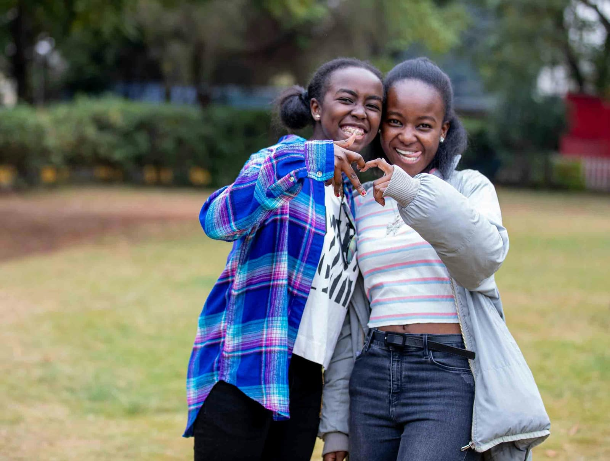
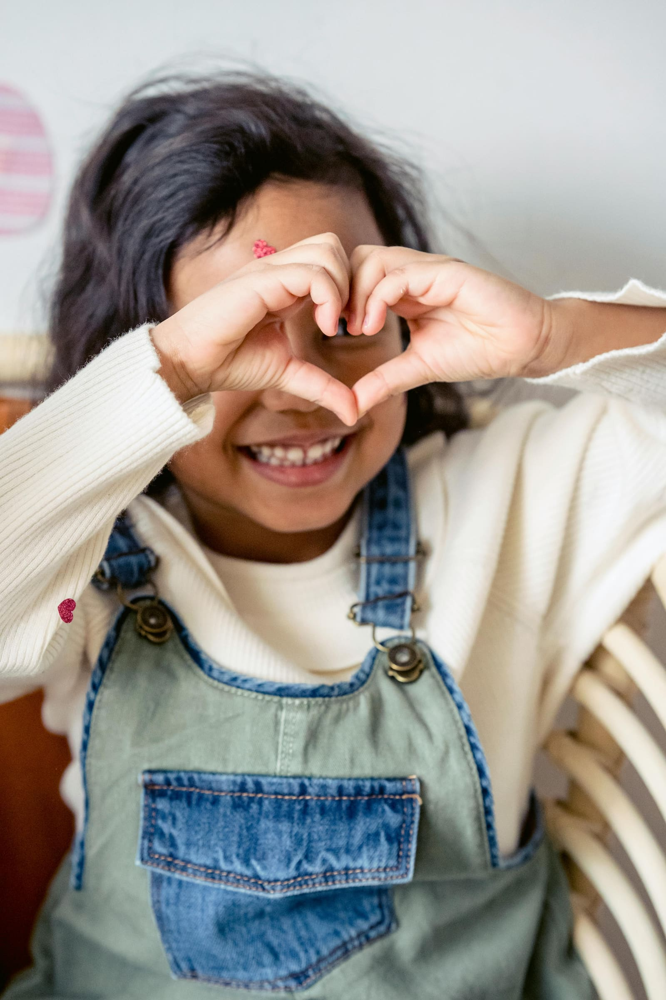

Trauma-Informed Practice & Systems Change
Helping adults create the conditions for young hearts to heal and thrive.
Evidence-informed training, consultancy and support that helps schools and organisations build cultures of safety, connection and belonging.
Introduction
I believe healing, growth and learning happen in relationships.
My work supports schools, colleges and organisations to develop compassionate, evidence-informed and relational approaches that help children, young people and adults feel safe, connected and able to thrive.
Grounded in neuroscience, belonging and trauma-informed practice, I help organisations move beyond awareness towards meaningful and sustainable implementation.
Areas of focus
Key focus areas
What I offer
Services for schools, colleges & organisations
Training
Reflective, evidence-informed sessions combining neuroscience with practical strategies staff can use straight away.
Explore training →Consultancy
Collaborative support to embed relational approaches that are sustainable and responsive to your context.
Explore consultancy →Speaker
Keynotes and conference sessions on trauma-informed practice, belonging and relationships.
Learn more →Systems Change
Embedding trauma-informed cultures at whole-system level across trusts and local authorities.
Learn more →Supervision
Individual and group reflective supervision for staff carrying relational, pastoral and therapeutic work.
Find out more →"Genuinely impressed by both the content and the way it was delivered — she invited us into the conversation rather than simply communicating information to us."
What belonging looks like
Connection, in all its forms


Stay connected
Reflective insights, straight to your inbox
I share occasional, evidence-informed writing on trauma-informed practice, belonging, relational leadership and staff wellbeing.
- Reflections and research-informed writing
- Training and event updates
- Recommended reading and resources
Ready to start the conversation?
Whether you're exploring training, consultancy or whole-system support, I'd love to hear from you.